听雨 发自 凹非寺
量子位 | 公众号 QbitAI
Jeff Dean在谷歌的最后48小时，是怎么过的？
答案是：可能比普通人正常上班还忙。
根据他本人在顶会KDD 2026晒出的时间表：
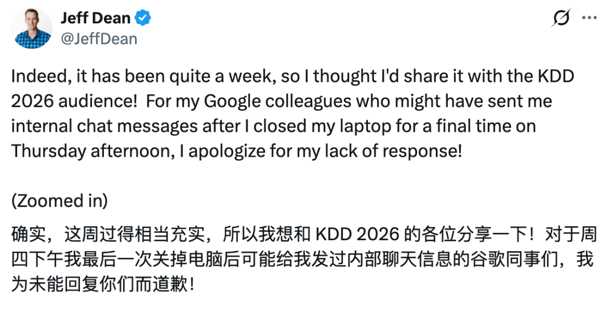 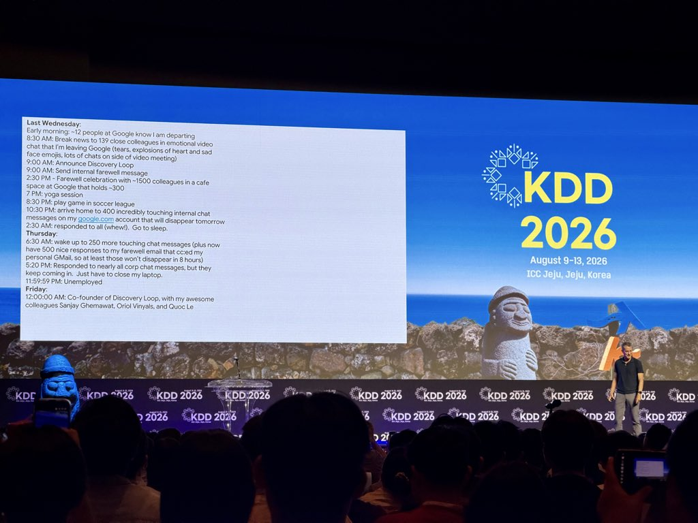
他先向139名「亲近同事」宣布离职，又参加了约1500人的告别会。
告别会结束，瑜伽课照上，足球赛照踢。
晚上回到家，他又逐条回复同事的告别消息，一直回到凌晨2点半。
只睡了4个小时，第二天醒来，新的消息又来了。
直到周四下午（8月6号），Jeff Dean才最后一次合上谷歌电脑，交回工牌和笔记本。
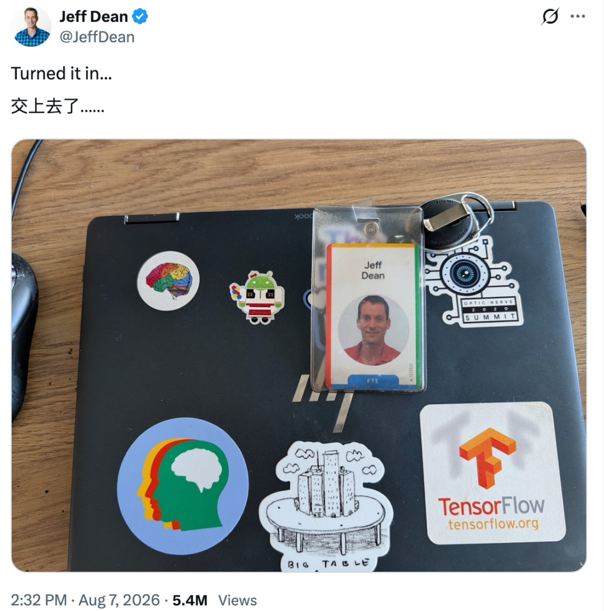
到了23:59:59分，他给自己写下一个新身份：
「失业」。
结果0点之后，他就重新上岗，摇身一变成为Discovery Loop的联创兼CEO。
只能说，谷歌传奇工程师连离职都比别人忙啊~（doge）
Jeff Dean离职前最后48小时
当地时间周三一早，谷歌内部只有约12个人知道Jeff Dean准备离职。
上午8:30，他把139名「亲近同事」拉进视频会议，亲自公布了这个消息。
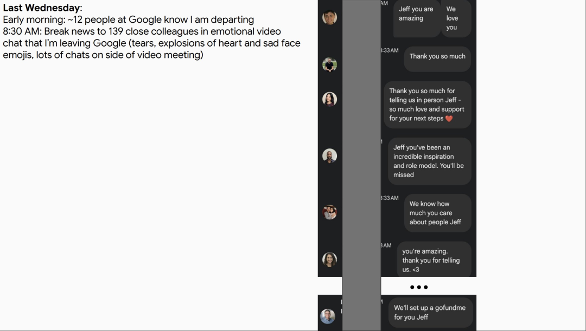
这场视频会议很伤感，Jeff Dean自己的原话是：
大家情绪激动、泪流满面，还「疯狂地发送心形和悲伤的表情符号」。
在侧边栏里，有人感谢他带来的帮助，有人说他一直是自己的榜样，还有人开玩笑：
「我们会为你发起一个GoFundMe，Jeff。」
嗯~伤感里也混杂着一点Google式幽默。
放在普通人身上，大概很难想象，自己会有139名关系亲近的同事。
但这可是Jeff Dean啊！他在谷歌待了27年，先后参与多代核心项目，曾经领导过约4400人的团队。
半小时后，上午9点，Jeff Dean给谷歌员工发送了一封内部告别信，并对外宣布新公司成立。
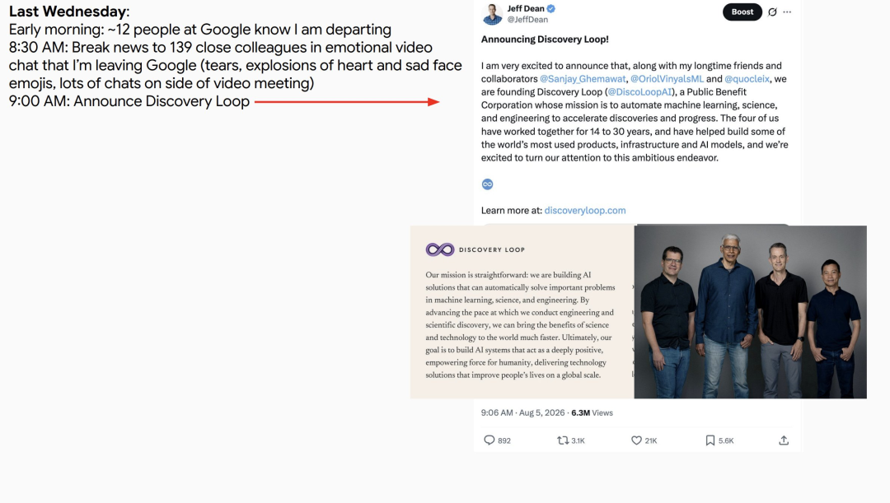 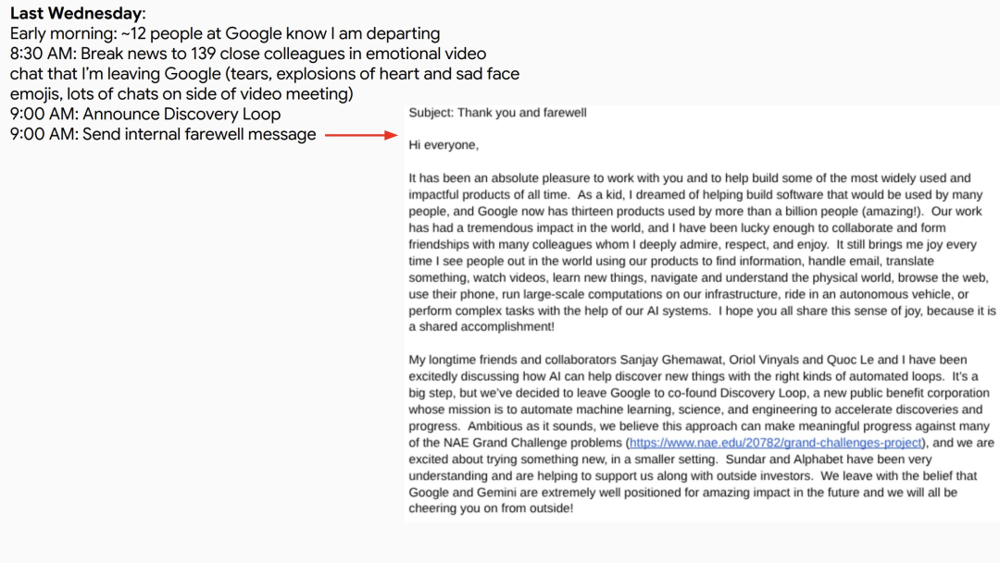
信中，他确认将与Sanjay Ghemawat、Oriol Vinyals和Quoc Le共同离开Google，创办Discovery Loop。
他们希望在一个更小的环境里，探索如何用AI和自动化工具加速机器学习、科学与工程研究。
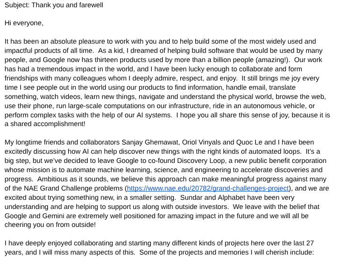 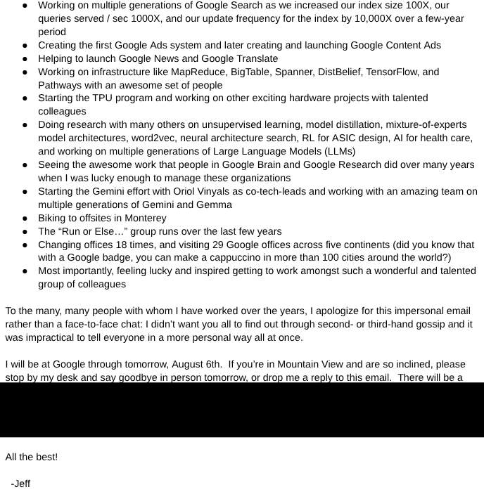
这封内部告别信写得非常真挚，没有丝毫怨气。
Jeff Dean特别提到，谷歌CEO劈柴哥和Alphabet都很理解并支持他们的决定。
他依然相信，谷歌和Gemini处于非常有利的位置，未来会继续产生巨大影响。
他还向同事解释，之所以选择用邮件告别，是不希望大家从二手、三手传言中得知消息。相比单独交谈，一封邮件至少能让更多同事同时、直接地听到他的说明。
信的后半段，Jeff Dean回顾了自己在谷歌近27年的经历。
从Search、MapReduce、Bigtable，到Google Brain、TPU、TensorFlow和Gemini，他几乎贯穿了Google几代核心技术。
不过，他记住的也不只有项目。
还有骑车去蒙特雷参加公司活动、和同事组成的「要么跑步、要么完蛋」的跑步小组、18次办公室搬迁，以及在五大洲到访过的29个谷歌办公室。
他确认，自己将在谷歌工作到8月6日。身在山景城的同事，可以到他的工位当面说再见。
几小时后，真的有无数人涌来。
下午14:30，Jeff Dean告别活动开始。
举办活动的是谷歌的一处咖啡厅，通常只能容纳约300人，但当天约有1500名同事前来参加。
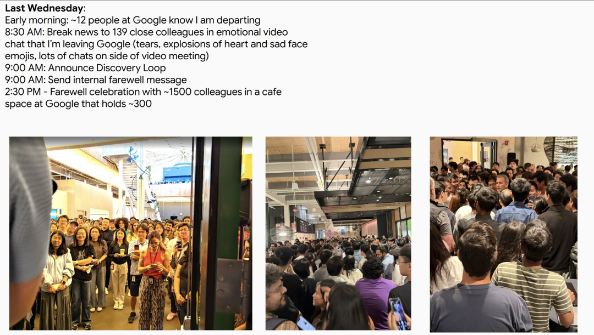
现场照片里，咖啡厅已经被人群填满。有人挤在门口，有人站在走廊，后面的人只能举起手机拍摄前方。
直接给谷歌姐夫围得水泄不通。
不过，告别会结束后，Jeff Dean并没有继续沉浸在离别氛围中。
晚上19:00，他照常去上瑜伽课。
20:30，又去参加了一场足球联赛。
只能说大佬不愧是大佬…
27年的谷歌生涯即将收官，还是课照上，球照踢，日常安排丝毫不误。
他还在评论区展示了自己的运动日常，除了足球和瑜伽，每周还有健身、骑行、跑步，五花八门。
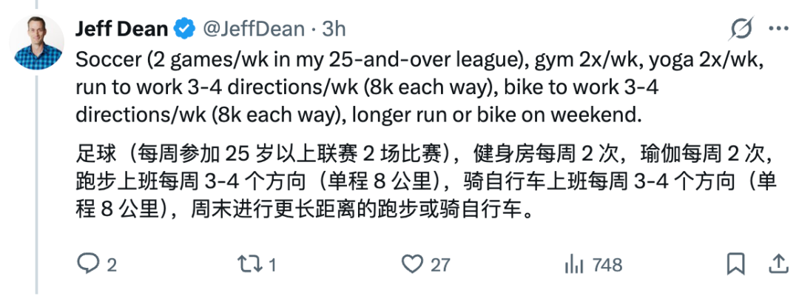
果然成功人士，都得是高精力人群。
到了晚上22:30，Jeff Dean回到家，再次打开谷歌内部账号。
发现有400条消息正等着他。
麻烦在于，这些消息都存在于他的谷歌内部账号中。等到第二天账号权限失效，它们也会随之消失。
于是，Jeff Dean开始逐条回复。
直到次日凌晨2:30，他终于把这400条消息全部回完。在时间表里，他还专门加了一个括号：
「呼。」
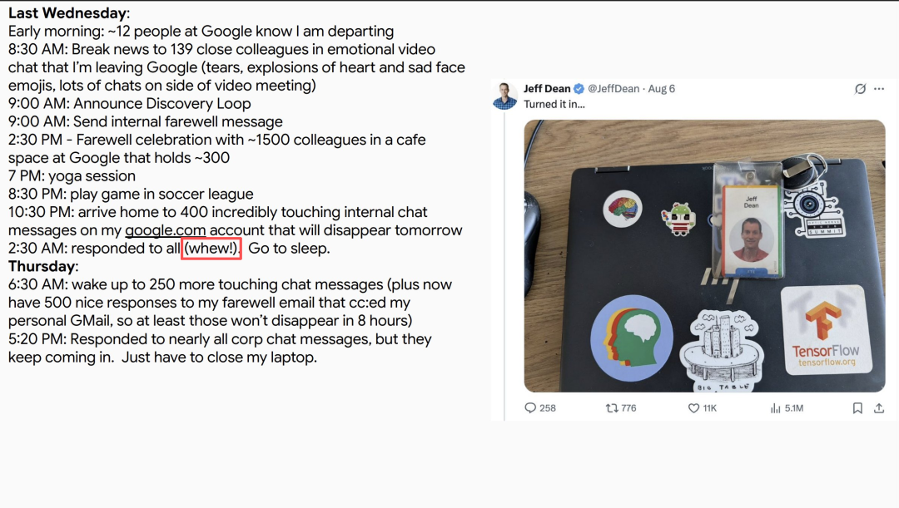
然后睡觉。
4个小时后，周四早上6:30，Jeff Dean醒了。
内部账号里又多了250条消息。此外，还有约500封同事对内部告别信的回复。
好在Jeff Dean此前将私人Gmail加入了抄送，因此这些邮件不会随公司账号一起消失。
他在时间表里写道：
「至少这些不会在8小时后消失。」
到了下午17:20，Jeff Dean已经回复了几乎所有公司内部消息。
但新的消息仍然不断出现。
可是交还电脑的时间到了，他只能合上电脑。
随后，他在X上晒出自己的Google工牌和公司笔记本电脑，配文只有一句：
「交回去了……」
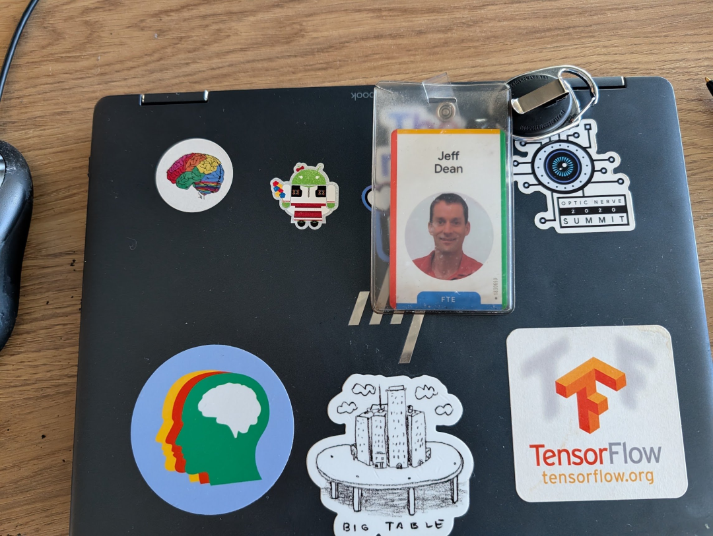
笔记本外壳上还留着TensorFlow、Bigtable和大脑图案等贴纸，像一张压缩版的谷歌技术履历。
有人注意到，Jeff Dean交回去的是一台Chromebook。
他随后解释，因为自己经常跑步上下班，所以一直准备了两台电脑，一台放在家里，一台留在公司，免得每天把电脑塞进跑步背包。
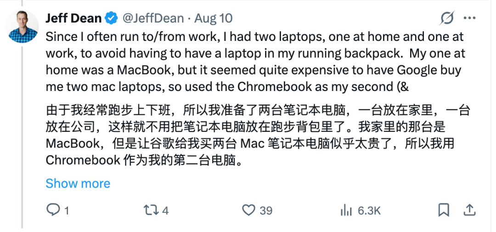
家里的那台是MacBook，但他觉得让谷歌给自己买两台Mac太贵了，于是选了一台Chromebook作为第二台电脑。
不er…原来谷歌最传奇的工程师，还想着为公司省钱啊？
这不是爱是什么。
Jeff Dean后来还专门向同事道歉：
「对于那些在我周四下午最后一次合上电脑后，仍然给我发送内部聊天消息的谷歌同事，很抱歉没能回复。」
近27年的谷歌传奇工程师生涯，就这样结束了。
晚上23:59:59，在Jeff Dean的时间表中，他给自己写下一句：
「Unemployed」（失业）。
……
1秒之后，他就找到了新工作！
Discovery Loop联创兼CEO。
为什么会有1500人来送他？
这样耳熟能详的大佬，本来不必多做介绍。
但要解释离职的空前盛况，还得回头看看他为谷歌留下了什么。
Jeff Dean于1999年加入谷歌，是公司最早期的一批员工，也是谷歌第30号员工。
此后的近27年，他几乎完整经历了谷歌的技术发展史。
早期，他与长期搭档Sanjay Ghemawat共同设计MapReduce，参与Bigtable等大规模分布式系统的研发。这些技术支撑了谷歌处理海量数据的能力，也影响了后来整个云计算行业。
进入AI时代后，Jeff Dean参与创立Google Brain，推动TensorFlow、TPU等项目。
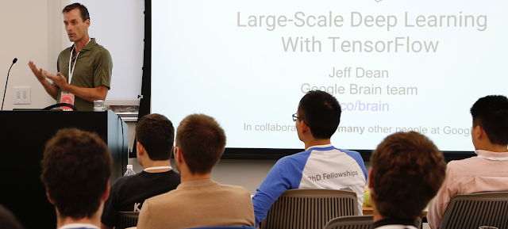
Google Brain与DeepMind合并后，他又担任Google DeepMind和Google Research首席科学家，参与确定谷歌的AI研究方向。
从搜索基础设施、分布式计算，到深度学习和Gemini，他跨越了谷歌几代核心技术体系。
但就是这样一位传奇人物，他在内部告别信里，并没有着重罗列自己的论文和头衔。
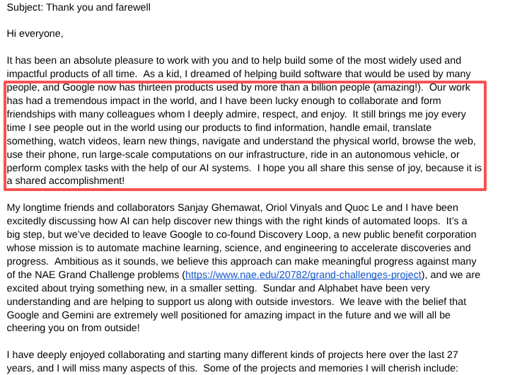
他写的是，谷歌已经有13款产品的用户超过10亿。
人们用这些产品搜索信息、收发邮件、翻译语言、观看视频、学习知识、理解现实世界；也会借助谷歌的基础设施运行大规模计算，乘坐自动驾驶汽车，或者用AI系统完成复杂任务。
这当然是无数谷歌员工共同完成的结果，并非Jeff Dean一个人的功劳。
这也解释了，为什么他的告别会引起谷歌员工如此巨大的反应。
在过去近27年里，Jeff Dean参与过不同阶段的核心项目，也和一代又一代谷歌工程师共同工作。
无论是139名亲近同事、约1500名告别者，还是不断涌入的上千条消息，连接的都是谷歌跨越多代产品和技术团队的人。
即便是没有与Jeff Dean共事过的谷歌员工，也依然对他的离开感触很深：
感谢你这些年的贡献，也感谢你树立了这样一个非凡的榜样。
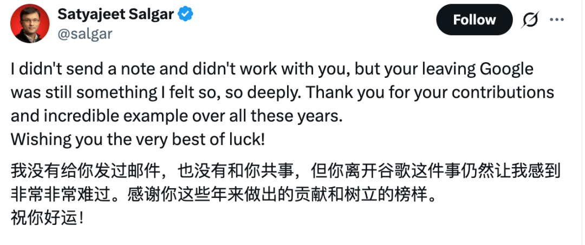
也许在那个周三下午，那间被挤满的咖啡厅，某种程度上也成了谷歌近27年技术史的一次临时集会。
One More Thing
到这还没结束。
因为Jeff Dean把离职第二天的时间线，也给披露了！
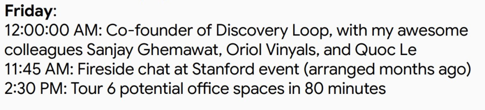
离开谷歌的第二天，周五上午11:45，他先去斯坦福参加了一场几个月前就已经安排好的炉边谈话。
下午14:30，他开始为Discovery Loop寻找办公室。
80分钟，就考察了6处办公场地，平均每处不到15分钟。
显然，谷歌姐夫已经马不停蹄地奔向新生活了。
所以不要伤感啦，多期待一下姐夫的新公司吧~
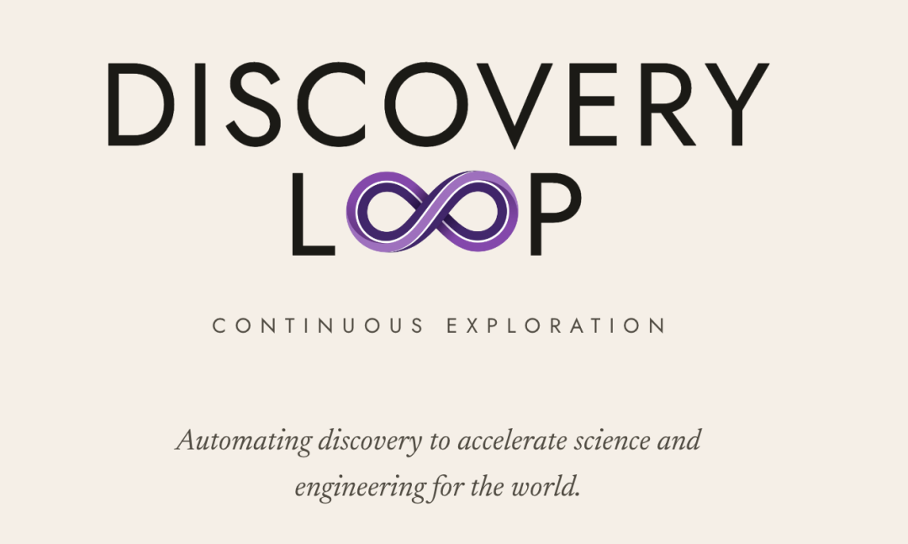
参考链接：
[1]https://x.com/JeffDean/status/2087038694054072637
[2]https://x.com/JeffDean/status/2085615103202976121
一键三连「点赞」「转发」「小心心」
欢迎在评论区留下你的想法！
— 完 —
🌟 点亮星标 🌟